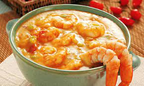

Bobó de camarão Recipe

Description
The bobó de camarão, a shrimp and cassava sauce, is one of the great icons
of Bahia State cuisine, a Northeast brazilian state, and it is of african origin.
The creamy cassava sauce is flavoured with coconut milk and azeite de dendê.
It can be served as an appetizer or as an main course, accompanied by white rice.
Ingredients
- 1kg prawn with shell (medium or large)
- 1kg cassava root
- 4 tbsp olive oil
- 1 medium onion, chopped
- 2 cloves garlic, minced
- 3 peeled, seeded and diced red tomatoes
- 2 tbsp chopped green onions
- 2 tbsp chopped parsley
- 1/4 cup tbsp chopped fresh cilantro
- 1 bay leaf
- 200ml coconut milk
- 1/4 cup palm oil (azeite de dendê)
- juice of 1/2 lime
- Salt, ground pepper, and chilli pepper
Steps
-
Wash the prawns, peel and remove the intestine on the back with a toothpick.
Season with salt, ground pepper and lemon juice and set aside.
-
Put the prawn shells and a little oil into a saucepan and fry on a high
heat or a few minutes. Add 500ml of water, bring to the boil and cook,
uncovered, for 5-10min. Let it cool down and strain the stock through
a sieve.
-
Cut the cassava root into logs and peel. Cut logs in half, remove the
"fibrous cord centre" and reduce all the pulp into small pieces.
-
Combine cassava pieces and prawn stock in a large pan, and add a little
water to just cover the cassava. Cover the pan with a lid and cook
cassava until tender and almost falling apart.
-
Add the coconut milk to the boiled cassava still hot. Use a immersion
blender to purée everything together.
-
In a large pan sauté onion with oil until tender. Add the crushed garlic,
chilli pepper, tomatoes, green onions, parsley, coriander and the bay
leaf. Let simmer until tender, then add the prawn and cook or a few minutes more.
-
Add the cassava purée to the prawn stew and mix well, then add the palm oil.
Remove the bay leaf and adjust seasonings to taste. If the bobó gets too
thick, thin it out with more water or coconut milk.
-
Serve in a clay pot accompanied by white rice.